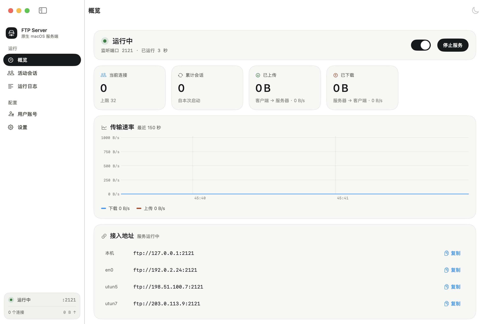

用 Swift 从零实现，只依赖系统框架。下载即用，无需配置任何运行环境。
单个压缩包内含完整应用，解压即可使用。下载链接固定不变，始终指向最新版本。
FTPServer.app 拖进「应用程序」文件夹
压缩包内另附 LICENSE 与一份使用说明
~/FTP Share 与只读的 ~/FTP Share/Public
本应用使用 ad-hoc（临时）签名。从网络下载后，macOS 会给它加上隔离属性， 双击时提示「无法验证开发者」或「已损坏」。这不是文件损坏，也不是下载出错。
按上面第 2 步放行一次即可。若仍被拦下，在「终端」里执行下面这行（假定已放进「应用程序」文件夹）：
xattr -dr com.apple.quarantine /Applications/FTPServer.app
要彻底消除这个提示需要开发者证书签名与公证；当前项目以开源方式分发， 从源码构建是绕开签名问题的另一条路。
把下载到的文件与校验文件放在同一目录，然后执行：
shasum -a 256 -c FTPServer-macOS-universal.zip.sha256
预期输出 FTPServer-macOS-universal.zip: OK，即与校验文件中记录的实际哈希一致。

协议正确性、边界安全与可观测性都被当作一等需求实现，而不是事后补齐。
被动模式 PASV / EPSV、主动模式 PORT 全部实现，并对 PORT 施加回连地址校验以阻断 FTP bounce 攻击。
REST 记录偏移配合 RETR / STOR 续传，APPE 追加写，大文件中途断掉不必重头再来。
SwiftUI 编写。实时速率曲线、活动会话管理、分级日志搜索、多账号管理，浅色深色与跟随系统。
可关闭 Dock 图标退居菜单栏，服务继续在后台运行；从菜单栏一键恢复主窗口或复制接入地址。
越出根目录的 .. 一律明确拒绝，符号链接写入前解析校验。读、写、删、改名四条路径同等对待。
空闲超时、数据停滞看门狗、ABOR 中止、异常断开自动清理，不会留下半开连接。
FEAT 向客户端声明 SIZE、MDTM、MLSD、MLST、
REST STREAM、UTF8、TVFS、EPSV。
| 类别 | 命令 | 说明 |
|---|---|---|
| 会话 | USER PASS ACCT QUIT NOOP SYST HELP |
登录、会话收尾与基础信息 |
| 目录 | PWD CWD CDUP MKD RMD DELE RNFR RNTO |
含 XPWD XCWD XCUP XMKD XRMD 旧式别名 |
| 列举 | LIST NLST MLSD MLST STAT |
MLSD / MLST 按 RFC 3659 输出结构化事实与 perm |
| 传输 | RETR STOR APPE REST ABOR ALLO |
下载、上传、追加、断点续传与中止 |
| 数据通道 | PASV EPSV PORT |
被动与主动模式，含 EPSV ALL |
| 参数与元数据 | TYPE STRU MODE SIZE MDTM FEAT OPTS |
ASCII / 二进制双模式，UTF8 与 MLST 选项 |
| 未实现 | STOU REIN SMNT SITE AUTH |
明确返回 502 / 503，不做静默忽略 |
共享目录之外的任何位置都不应被触碰——这一条在读、写、删、改名四条路径上分别验证。
客户端路径先逐段消除 . 与 ..。越出根目录的 .. 是明确拒绝，
而不是静默钳制到根目录——后者看似安全，实则会让客户端误判自己的位置。
随后再做一次符号链接解析后的包含性校验，阻断根目录内的软链接逃逸。
写入路径（STOR / APPE / MKD）校验的是父目录，
因此另外单独确认目标自身不是指向根目录之外的软链接。
口令以加盐 SHA256 存储，校验使用恒定时间比较，避免通过响应耗时侧信道推断口令。
登录失败不区分「账号不存在」与「口令错误」，避免账号枚举；
日志中 PASS / ACCT 参数一律打码；
PORT 命令限定回连地址必须与控制连接来源一致。
关于口令哈希：当前未做密钥拉伸（无 PBKDF2 / scrypt）。 对局域网内的可信共享场景，加盐 SHA256 已足够；若要将服务暴露到公网， 建议先引入 KDF 并启用加密传输。
默认监听 2121 端口（21 端口需要 root 权限，刻意避开以便双击即用）， 首次启动自动创建共享目录。
侧边栏分五区：概览、活动会话、运行日志、用户账号、设置。 在「用户账号」里为每个账号指定独立根目录与权限；在「设置」里改端口、绑定范围与超时。
菜单栏常驻：可在设置中选择关闭窗口后「最小化到菜单栏」，服务继续在后台运行，也可直接退出软件。
curl ftp://127.0.0.1:2121/ curl -u alice:secret -T local.txt \ ftp://127.0.0.1:2121/remote.txt
图形客户端可选 Cyberduck、FileZilla、Transmit 等。
访达无法连接本服务：macOS 自 10.13 起已移除 FTP 支持。 这不是本应用的限制，任何 FTP 服务端在访达里都连不上。
不想处理签名提示，或者要改点什么，可以直接构建。需要 macOS 14 以上与完整 Xcode 或 Swift 工具链。
git clone https://github.com/zdx8/FTPServer.git cd FTPServer swift build -c release --disable-sandbox
bash Scripts/package_app.sh
脚本会生成图标、组装 dist/FTPServer.app，并递增构建号、刷新系统图标缓存。
加 UNIVERSAL=1 可产出同时支持两种架构的通用二进制。
open dist/FTPServer.app
便于脚本化或被 launchd 驱动，无需图形界面。
FTPServer --headless \ --port 2121 \ --root ~/FTP\ Share \ --user alice secret ~/alice-share rwmd \ --user guest guest ~/FTP\ Share/Public r
bash Scripts/make_release.sh
产出通用二进制的压缩包与 SHA256 校验文件，可直接作为 Release 附件。
三层测试都可独立运行，完全不依赖图形界面。
| 层级 | 方式 | 覆盖内容 |
|---|---|---|
| 协议一致性 | Scripts/e2e_test.pyPython ftplib · 100 项 |
认证与权限拒绝、三种数据通道、四种列举、5 MB 随机数据哈希校验、空文件、断点续传、ASCII 往返、Unicode 文件名、8 路并发、7 类路径逃逸与 5 类符号链接写入逃逸 |
| Core 自检 | Scripts/selfcheckSwift，无界面 |
会话发布链路、两种绑定模式的实际绑定地址、配置向后兼容、符号链接写入防护、下载源中途截断检测 |
| 界面层 | Scripts/uicheckSwift，无界面 |
视图离屏渲染回归，以及「真实客户端 → 服务器 → 视图模型 → 渲染」的端到端链路 |
python3 Scripts/e2e_test.py \ "$(swift build -c release --show-bin-path --disable-sandbox)/FTPServer" 21321
以下是明确的未实现项，而非缺陷——写在这里是为了让选型有据可依。
AUTH TLS 返回 502。FTPS 需要引入 TLS 通道，SFTP 基于 SSH 协议、实现量是 FTP 的数倍。当前仅适合局域网内的明文传输场景。
没有磁盘配额、没有带宽限制、没有目录级 ACL。权限粒度是账号级的四个开关：下载、上传、删除、建目录。
打包使用 ad-hoc 临时签名，拷到其他机器会被 Gatekeeper 拦截。对外分发需要开发者证书签名与公证。
STOU REIN SMNT SITE 统一返回 502，不做静默忽略——客户端能明确知道服务器不支持。